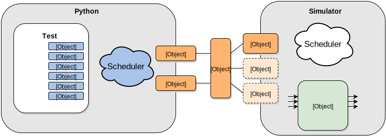

Introduction¶
What is cocotb?¶
Cocotb is a COroutine based COsimulation TestBench environment for verifying VHDL/Verilog RTL using Python.
Cocotb is completely free, open source (under the BSD License) and hosted on GitHub.
Cocotb requires a simulator to simulate the RTL. Simulators that have been tested and known to work with Cocotb:
Linux Platforms
- Icarus Verilog
- Aldec Riviera-PRO
- Synopsys VCS
- Cadence Incisive
- Mentor Modelsim
Windows Platform
- Icarus Verilog
- Aldec Riviera-PRO
- Mentor Modelsim
Cocotb can be used live in a web-browser using EDA Playground.
How is Cocotb different?¶
Cocotb encourages the same philosophy of design re-use and randomised testing as UVM, however is implemented in Python rather than SystemVerilog.
In Cocotb VHDL/Verilog/SystemVerilog are only used for the synthesisable design.
Cocotb has built-in support for integrating with the Jenkins continuous integration system.
Cocotb was specifically designed to lower the overhead of creating a test.
Cocotb automatically discovers tests so that no additional step is required to add a test to a regression.
All verification is done using Python which has various advantages over using SystemVerilog or VHDL for verification:
- Writing Python is fast - it’s a very productive language
- It’s easy to interface to other languages from Python
- Python has a huge library of existing code to re-use like packet generation libraries.
- Python is interpreted. Tests can be edited and re-run them without having to recompile the design or exit the simulator GUI.
- Python is popular - far more engineers know Python than SystemVerilog or VHDL
How does Cocotb work?¶
Overview¶
A typical cocotb testbench requires no additional RTL code. The Design Under Test (DUT) is instantiated as the toplevel in the simulator without any wrapper code. Cocotb drives stimulus onto the inputs to the DUT (or further down the hierarchy) and monitors the outputs directly from Python.
A test is simply a Python function. At any given time either the simulator is advancing time or the Python code is executing. The yield keyword is used to indicate when to pass control of execution back to the simulator. A test can spawn multiple coroutines, allowing for independent flows of execution.
Contributors¶
Cocotb was developed by Potential Ventures with the support of Solarflare Communications Ltd and contributions from Gordon McGregor and Finn Grimwood (see contributers for full list of contributions).